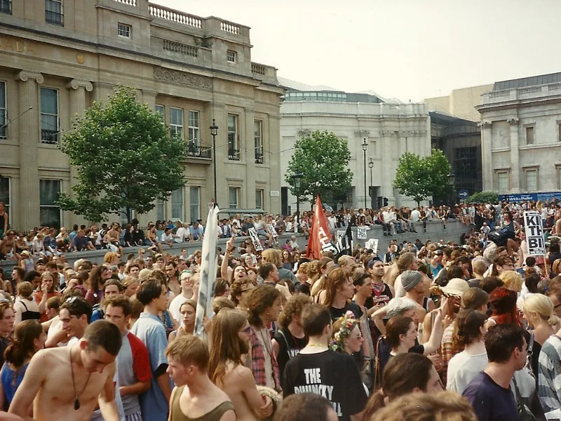

90s rave music
90s rave music: the records, the scenes and the law
A bleep record from Leeds, a toytown hit, Belgian techno, Rotterdam gabber and a field in Worcestershire. What was played at raves between 1990 and 1999, and what the law made of it.
One night, six sounds.
Ask for 90s rave music and you get records that do not sound alike: a bleep record from Leeds, a toytown hit built on a children's safety film, a techno 12-inch on a Belgian label, a Rotterdam track that is one pounding beat and one bouncing sound. All of it was played at raves within a few years of each other. "Rave" described the night, and the music played at one kept splitting.
This page sorts the decade by scene and date, with a record to press play on for most of them. The 1987 to 1990 boom belongs to the acid house guide, and the jungle that grew out of hardcore to the jungle guide.
What is 90s rave music?
The label covers a lot. Joe Muggs, writing for Bandcamp Daily, calls rave hybrid by nature: house and techno colliding with hip-hop, industrial, dub and dancehall, made on new technology with the sole aim of keeping the party going. Much of it was pressed on labels with a loose approach to sample clearance.
| Strand | Years | Where | A record to start with |
|---|---|---|---|
| Bleep | 1990 | Leeds, Sheffield | LFO, "LFO" (1990) |
| Toytown rave | 1991 | Britain | The Prodigy, "Charly" (1991) |
| Early jungle roots | 1991 | East London | Lennie De Ice, "We Are I.E." (1991) |
| Belgian and New York techno | 1991 | Belgium, New York | Second Phase, "Mentasm" (1991) |
| Gabber | 1992 | Rotterdam | Rotterdam Termination Source, "Poing" (1992) |
| American rave anthems | 1990 to 1999 | United States | Joey Beltram, "Energy Flash" (1990) |
1990 to 1992
1990's rave music: hardcore in Britain.
The first record on this page is LFO's "LFO", released on 26 July 1990 on Warp Records, then a young label in Sheffield. It was made in Leeds by Gez Varley and Mark Bell, with help from Martin Williams. Warp co-founder Steve Beckett has said it was the record that turned Warp into a real label, and it reached number 12 in the UK charts.
A year later came "Charly" by The Prodigy, released on XL Recordings on 12 August 1991. It peaked at number 3 in the UK and had sold 200,000 copies by October 1992, according to Music Week. Its hook comes from Charley Says, a 1970s public information film for children, whose line about telling your mummy before you go off somewhere is repeated at speed. Radio X counts The Prodigy's early records among its classic rave anthems.
"We Are I.E." by Lennie De Ice was recorded in 1989 and released in 1991 on Reel 2 Reel, out of the De Underground record shop in Forest Gate, east London. It is often credited as one of the first records to lay down the foundations for jungle, and the drum and bass DJ Grooverider told Red Bull Music Academy in 2015 that after it people started to talk about jungle.
In May 1992 Shut Up and Dance, the duo of Philip "PJ" Johnson and Carl "Smiley" Hyman, put out "Raving I'm Raving", built on Marc Cohn's "Walking in Memphis". Cohn obtained an injunction because the sample had not been cleared. Shut Up and Dance agreed to press no copies beyond the first run and to give all sales to charity. The record went to number 2 in the UK before dropping out of the top 40. There is no player for it here, because no official upload turned up.
For the longer run of British sounds from the pirate-radio years onward, the UK electronic music evolution page has the timeline.
1991
Belgium and New York: "Mentasm" and "Anasthasia".
Belgium's R&S Records released "Mentasm" in 1991 by Second Phase, the name Mundo Muzique and Joey Beltram used for it. Muzique told Red Bull Music Academy Daily that many people did not understand why Roland put such a "stupid" sound on such a good synthesizer, and that the record lasts because it balances chaos and dancefloor-friendly beats. The upload below is the label's own.
T99's "Anasthasia", by the Belgian duo Patrick DeMeyer and Olivier Abbeloos, was an underground record that also charted in 1991: a top 15 single in the UK, number 4 in the Netherlands and number 9 in Belgium. For the techno that sits behind both records, see the techno guide.
1992
The Netherlands: gabber.
Gabber developed in Rotterdam and Amsterdam in the 1990s, around labels such as Rotterdam Records, Mokum, Pengo and Industrial Strength. Paul Elstak founded Rotterdam Records in 1992, and one of its early releases was "Poing" by Rotterdam Termination Source, Maurice Steenbergen and Danny Scholte. It is a minimal record: a pounding beat and a "poing" sound that gives it its name. Chart positions for it differ between sources, so none is given here.
1992 to 1994
Free parties and the law.
The other 1990s rave was not in a club. From 22 May 1992, sound systems including Spiral Tribe, Bedlam, DiY, Adrenalin and Circus Warp set up on Castlemorton Common in Worcestershire, and the party ran for about a week. Estimates of the crowd run from 20,000 to 40,000. Thirteen members of Spiral Tribe were later charged with public order offences and acquitted. Tabloids portrayed the event as a problem caused by travellers rather than clubbers, yet that summer, Sheryl Garratt writes in Adventures in Wonderland, The Sun covered a Fantazia rave for well over 25,000 people in glowingly positive terms. Within months, legislation aimed at similar parties was drafted into the Criminal Justice Bill that became the Criminal Justice and Public Order Act 1994.
Section 63 of that Act applied to open-air gatherings of 100 or more people at which amplified music was played at night, loud and long enough to be likely to cause serious distress to local residents. As enacted, a police superintendent who reasonably believed that two or more people were preparing such a gathering, or that ten or more were waiting for or attending one, could direct them to leave the land and remove their vehicles and property. The section says music includes "sounds wholly or predominantly characterised by the emission of a succession of repetitive beats". The 100-person threshold was cut to 20 in England and Wales by the Anti-social Behaviour Act 2003.
The Prodigy answered on record. Music for the Jilted Generation came out on XL on 4 July 1994 and went to number 1 in the UK, and its track "Their Law" addresses the legislation directly. Liam Howlett has since said the album was never meant to be political. The photograph below is from the march against the Bill in Trafalgar Square on 24 July 1994.

1990 to 1999
The United States.
Mixmag's list of the 20 best US rave anthems of the 90s was picked from over 400 tracks submitted by ravers in San Francisco, Los Angeles, Chicago and New York, and runs from 1990 to 1999. It opens with Joey Beltram's "Energy Flash" (1990) and includes Moby's "Go" (1990), Cajmere's "Percolator" (1992), Jeff Mills's "The Seawolf" (1992), Josh Wink's "Higher State of Consciousness" (1995) and The Crystal Method's "Busy Child" (1997). The acid side of the story is in the acid house guide and the Detroit side is in the techno guide.
After 1992: the split.
Late in 1992 British hardcore began to break apart into darkcore, hardcore jungle and happy hardcore. Simon Reynolds, in Energy Flash (1998), writes that hardcore plunged into the darkside in 1993 while a breakaway faction kept making upbeat tunes on hectic breakbeats, and that by the end of 1994 happy hardcore ran as a scene parallel to jungle. Hardcore jungle is the strand that leads into jungle, covered in the jungle guide, and the breakbeat guide covers the drum pattern underneath.
How to listen now.
Other lists will give you more records than this page does. Bandcamp Daily's "'90s Rave Music: The Deep Cuts" by Joe Muggs (24 April 2025) picks 15 records, among them Soichi Terada's "Good Morning" (1993), Neil Landstrumm's "Home Delivery" (1995) and Laura Grabb's "Whatever You Call It 1" (1998). Radio X's list of the best 90s rave tracks includes Utah Saints' "Something Good" (1992) and Altern 8's "E-Vapor-8" (1992). This page follows the British, Belgian and Dutch scenes in date order and says what the law did to them.
90s rave music FAQ.
What is 90s rave music?
Whatever was played at raves between 1990 and 1999. In Britain that was mostly hardcore. Elsewhere it was Belgian and New York techno, Dutch gabber and American rave anthems.
What counts as 1990's rave music?
Records released between 1990 and 1999 that were played at raves. This page starts with LFO's "LFO" (1990) and The Prodigy's "Charly" (1991), runs through Belgian techno and Dutch gabber, and ends with the split of British hardcore after 1992.
What do people mean by 90 rave music?
Usually the same thing as 90s rave music: the records played at raves in the 1990s. The strand table near the top is the place to start.
Did the law really ban repetitive beats?
Not as a blanket ban. Section 63 of the Criminal Justice and Public Order Act 1994 let police direct people to leave land where 100 or more were gathered in the open air at night, with amplified music loud and long enough to be likely to cause serious distress to locals. The section says music includes sounds wholly or predominantly characterised by a succession of repetitive beats.
Was The Prodigy rave music?
Their early records were. "Charly" (1991) reached number 3 in the UK, and Music for the Jilted Generation (1994) was made in the aftermath of the Criminal Justice Act.
Where can I hear 90s rave music now?
Start with the players on this page, then use the Bandcamp Daily and Radio X lists named in the how-to-listen section.
Sources.
- Bandcamp Daily: '90s Rave Music: The Deep Cuts, by Joe Muggs (2025)
- Radio X: The best 90s rave tracks
- Mixmag: The 20 best US rave anthems of the 90s
- 909originals: How LFO made "LFO", with Gez Varley (2020)
- Music Week: The Prodigy's chart history in numbers
- Wikipedia: Charly (song)
- Wikipedia: We Are I.E.
- 909originals: Shut Up and Dance, "Raving I'm Raving" (2018)
- Red Bull Music Academy Daily: Key Tracks, Mundo Muzique on Second Phase's "Mentasm" (2014)
- Wikipedia: T99
- Wikipedia: Rotterdam Termination Source and Gabber
- Wikipedia: Castlemorton Common Festival and 909originals: Castlemorton (2018)
- legislation.gov.uk: Criminal Justice and Public Order Act 1994, section 63 as enacted and as amended
- Wikipedia: Music for the Jilted Generation
- Wikipedia: Breakbeat hardcore, citing Simon Reynolds, Energy Flash (1998)
Continue reading
Read next.
 Music history~14 min read
Music history~14 min readWhat Is Acid House? From Chicago's TB-303 to the UK Rave Boom
A $40 bass machine, three friends in Chicago, a DJ who played their tape four times in a night, and the British movement that borrowed the name.
Read article → Music history~22 min read
Music history~22 min readBreakbeat Music: History, Sound and Evolution
From funk breaks and pirate radio to cracked VSTs and modern bass hybrids.
Read article → Music history~18 min read
Music history~18 min readJungle Music: From Roots to Revival
Pirate radio, dubplates, MC energy and the global return of a distinctly Black British sound.
Read article → Music history~27 min read
Music history~27 min readThe Evolution of UK Electronic Music
Ten sounds that travelled from regional underground scenes into global culture.
Read article →